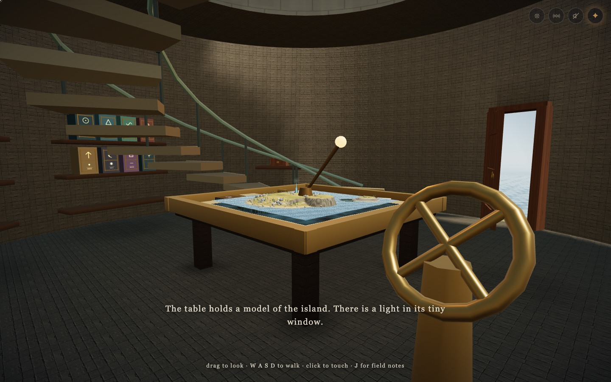
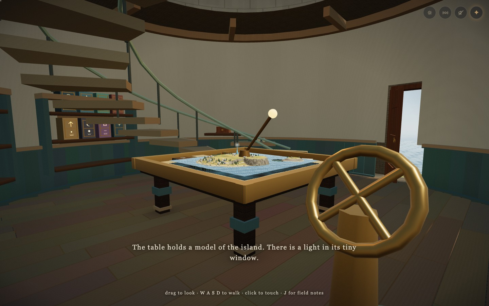

← The complete journeyThe room and the trees.
Matching views from the published Landfall revision and the Working coast revision. Move the divider to compare the floor, joinery, branches and shore.


Working coastLandfall| View | Draw calls | Triangles |
|---|
| Study · noon | 478 → 475 | 988,527 → 931,799 |
|---|
| Study · night | 478 → 475 | 988,527 → 931,799 |
|---|
| Forest · noon | 242 → 248 | 534,606 → 631,724 |
|---|
| Forest · night | 233 → 239 | 533,458 → 630,576 |
|---|
| Beach · noon | 340 → 346 | 584,354 → 661,480 |
|---|
| Beach · night | 301 → 307 | 577,838 → 654,964 |
|---|
The new miniature reduces the study's geometry. Fuller nearby branches increase the cost outdoors. These counts include the complete rendered frame at 1440 × 900.
GPU timings are retained in the before record and after record. Host load was not controlled, so the samples do not establish a speed improvement.